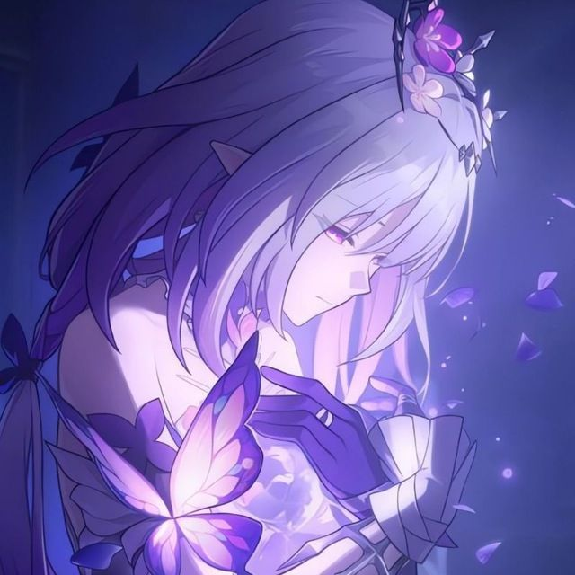
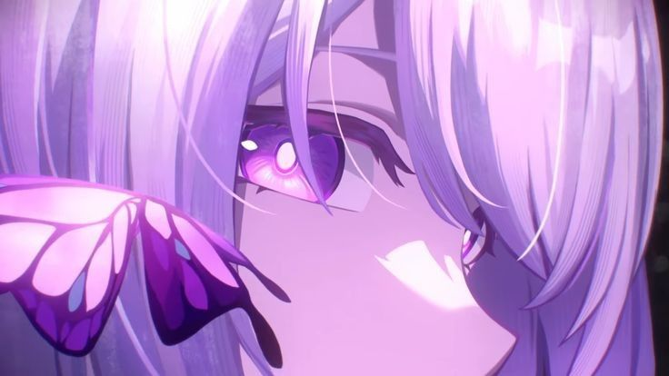

Касторія

Біографія:
Касторія – грабельний 5-зірковий персонаж у грі Honkai: Star Rail.
«Ласкаво просимо до Охеми, я Касторія. Перепрошую, але я звикла тримати дистанцію з оточуючими... Якщо ви побажаєте, я можу підійти ближче»
Слуга смерті: Касторія. Край, що схиляється перед смертю, Айдонія, де вічно кружляє сніг, нині занурений у солодкий спокій. Дочка Річки душ Касторія, златіус, що шукає ядро полум'я «смерті», вирушай у дорогу. Ти маєш оберігати скорботу душ світу і тримати в обіймах самотність долі. — Життя і смерть — лише подорож. Коли метелик сяде на гілку, зів'яле народиться знову -- опис з Вікі гри.
Загальна інформація: історія персонажа: Частина І
Скільки вона пам'ятає, в Айдонії весь час лежить сніг, і час ніби завмер на цій тихій засніженій землі. Дівчинкою вона одного разу спитала Амунет, що таке сніг. Амунет відповіла, що сніг — радість побачення та горе розлуки у світі смертних. Вона завжди заворожено спостерігала за городянами. Щодня присадкуваті лицарі приходили тренуватися до воріт храму, жрець середнього віку зрідка дрімав під склепінням високої вежі, самовіддані вчені роздавали дітям андельне печиво. Трохи віддалік діти, штовхаючись і граючись, грали в сніжки. Їхній заливистий сміх опадав у її грудях, наче зрілий фрукт. Вона марно намагалася роздивитись їхні обличчя з вежі. Діва, так її називали люди, і ніхто з них не наважувався дивитися їй у вічі. Коли вона набиралася мужності підійти ближче, вони відступали, відводячи погляд, навіть поблизу вона не могла їх як слід розглянути. Доки смерть не починала дихати їм в обличчя... Присадкуваті лицарі страждали від важких поранень на полі бою, жрець середніх років мучився від багаторічної недуги, а самовіддані вчені заражалися від своїх пацієнтів. Вона могла наблизитися до них лише в їхню останню мить. Життя тоді переставало бути нестерпною агонією, і її пальці перетворювалися на квіткові пелюстки на вітрі. Вона нарешті могла побачити їхні обличчя, але не могла винести їхнього вигляду і відверталася. — Чиїсь руки народжені, щоб садити рослини, інші — щоб правити... Тобі ж уготовано творити прощання. Ці слова Амунет врізалися їй у пам'ять, і одного разу вона запитала, що її руки залишать після себе. Опам'ятавшись, вона глянула на незакінчену крижану скульптуру — молоді воїни піднімають зброю, матері обіймають синів, що вирушають на війну, пари закоханих тримають у долонях обличчя один одного не в змозі розлучитися... Цих людей більше нема. Але таке повторюється знову і знову. У землях, охоплених хуртовиною, та за їх межами. Зрештою вона зрозуміла, що навіть айдонійський сніг колись розтане, — все одно чи пізно опиниться в обіймах смерті. «Веселий Ніколас і добра Хелена, І мовчазний Кріто на вітрі... Їх в обіймах тримала вночі я смиренно, Імена забуду і пам'ять зітру... І із зорею перетвориться нашій скорботі темрява У окріп, що розіллється, як річка, під шаром льоду.»
(текст з Вікі, написаний через перекладач. можуть бути помилки.)
Історія персонажа: Частина ІІ
Залишивши Айдонію, вона вирушила на зустріч із Танатос — у подорож із невідомим пунктом призначення. Вона виганяла чудовиськ чорної течії і рятувала в'янучі села. Вона перестала бути дівою битв, але продовжувала триматися подалі від людей, ховаючи долоні. І все ж не могла встояти перед сяйвом дитячих очей: взявши вперше в руки пряжу та голку, вона виконала останнє бажання однієї дитини доторкнутися до плюшевої іграшки. На полі бою, де балом правила смерть, вона писала листи скорботним сім'ям загиблих воїнів. Вона навіть навчалася віршування у зарозумілого поета, щоб проводжати померлих віршами... «Смерть неминуча, але необхідна», «Смерть — честь для воїна», «Смерть — лише догляд часу»... Під час довгого шляху вона чула сотні різних думок, прямолінійних і метафоричних, але всі вони були подібні до бризу над гладдю води — жодна з них не знайшла відгуку в її серці. — Потім... хтось сказав, що світанок зберігає надію на життя у цьому священному місті. Можливо, тут я зможу... — обірвала дівчина. — Нічого, як хочеш, можеш не розповідати. Ласкаво просимо до Охеми! — промовила рудоволоса дівчинка і подала їй чашку гарячого чаю. Пані із золотим волоссям з цікавістю розглядала дівочі рукавички: - Елегантний аксесуар. Ти навчилася їх шити під час мандрівок? — та зніяковіло зчепила пальці. — Так, я хотіла... зробити прощання урочистішими. Сонячне світло в Охемі було жарким і засліплюючим, вічна робота мехагеліоса обіцяла нескінченне майбутнє. Її друге життя почалося з маленької кімнати. Приміщення, що колись пустувало, було прикрашене численними речами, які щодня наповнювали її життя: м'які іграшки, подушки з химерами, важкі збірки віршів. Серед них більше не було символів скорботи, лише подарунки, пам'ятні штучки та приємні побажання... Під яскравими променями Охеми її звички шанування померлих перетворилися на джерела теплоти та сили. «Пейзаж за вікном Все той самий. Сонце промені та спів хвиль. Змахнула з долонь іній замерзлий, Щоб стали теплішими, навесні їх наповню.»
Історія персонажа: ІІІ
Вона знала, що її кінець не буде таким, як у товаришів, але поступово і в її житті почали траплятися миті, наповнені теплотою. Відома лагідними золотими нитками, вона вперше, хай і незграбно, закружляла в танці з іншими. У тому повному житті саду вона разом із Гіациною створювала букети із засушених квітів, які були ніби живі. У день отримання диплому в Рощі сонячне світло освітлювало її сукню так, ніби по ньому пробігали тіні метеликів, що пурхали. Моменти, які здаються неважливими для інших людей, давно стали її паливом для самотнього життя, позбавленого тепла. Вона так відчайдушно жадала його, і саме тому навчилася стримувати свої очікування. Можливо, це було пов'язано з нескінченними втратами в подорожі Того, хто переслідує полум'я, можливо, вона не хотіла переживати ще одну жахливу трагедію... Як у тому кошмарі, який переслідував її багато років, де все повторювалося знову і знову... Сонце зайшло в долонях Кефала, і світанок священного міста потонув у багряному заході сонця. Чорна течія обрушилася лавиною, і в гробовій тиші купалень Золотий Ткач вперше обняла її — в морі квітів залишилося лише її втомлене зітхання. — Моє кохання не забере смерть. — До завтра, Касі, — посланка в порваному одязі обернулася в іграшку і на останньому подиху впала їй у руки. Вона намагалася зловити пелюстки, що розлетілися, але спритна злодійка схопила її за руку і вручила останню нагороду. — Зроби мені ласку, хоч разок. Що якщо ми обдуримо смерть? Жрець неба опустив погляд і зник, ледь торкнувшись її плеча. Принц у просоченій кров'ю короні прикрив повіки в очікуванні страти. Воїн у розбитих обладунках утирав червоні сльози. Філософ Гаї з посмішкою запросив її засвідчити свою останню мить. Наприкінці сну вона бачила, як гість(-я) з-за меж неба схиляє коліна і падає під зоряним небом — так підтвердилося її найстрашніше припущення... — Касенько, відпочинь трохи. — вимовляє лікар у кабінеті гіпнозу Сутінкового двору, в її очах завмерла тривога. Наче прийнявши якесь рішення, вона протирає піт з чола. — Ні, я зроблю все, що в моїх силах, щоб цей кошмар ніколи не став дійсністю... «У кожного з нас був свій шлях. Але полум'я світло нас зробило одним. Ми, як метелик, чекає біль від опіку. Але манить аж ніяк не проблиск надії Надію дає шлях уперед.»
Історія персонажа: Частина ІV
— Можливо, сьогодні мій останній день в Охемі. Після важкої подорожі вона нарешті знайшла сліди царства мертвих. Перш ніж вирушити туди, звідки немає, вона хоче ще раз поглянути на світ. Це купальня златіусів. Вона пам'ятає, як тут, у клубах пари, Аглая подарувала їй рукавички, які сама відремонтувала. — Касторія, ти дуже змінилася з моменту нашої першої зустрічі. Вона з подивом стосується чудового візерунка на рукавичках, і зазвичай незворушний лідер, посміхаючись, підморгує їй. — Навіть зараз під холодною оболонкою я бачу твоє серце, що горить. Це тихий сад за будинком, облагороджений її сном. Її сни завжди були сплутаними, а в одному з них вона зустрічалася із самою собою. Вони разом зрізали гілки і удобрювали рослини в саду, поки безплідна земля не перетворювалася на пишний квітковий оазис. — Сподіваюся, я саджатиму насіння надії і в майбутньому... Це пам'ятник, присвячений померлим від руки. Усім — від полеглих в Айдонії до златіусів у подорожі Переслідувачів полум'я... Протягом тисячоліття вона намагалася зберегти в пам'яті імена та минуле кожного з них. - Поки тебе пам'ятають, ти не зникнеш. Це місце її першої зустрічі з Першопроходцем. Вона завжди вважала зустрічі чудовою подією: знайомі вулиці наповнювалися особливим змістом, якщо були пов'язані з кимось іншим. — Пані/пане, своїми руками я поверну... Наближається година брами, а разом з ним і мить відправлення. Під теплим промінням сонця вона загадує перше і останнє бажання: якщо на початку було довге охолоджене життя, вона напише разом з нею/ним... Вірш «Касторія», в якому на останньому рядку будуть міцні обійми.